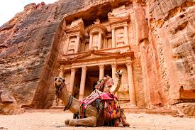

Petra

Es un importante enclave arqueológico en Jordania y la capital
del antiguo reino nabateo, cuyos pobladores la llamaban Raqmu
en árabe nabateo El nombre de Petra proviene del griego p?t?a, que significa piedra.
El asentamiento de Petra se localiza en un valle angosto, al este del valle de Arabá
que se extiende desde el mar Muerto hasta el Golfo de Aqaba. Los restos más célebres
de Petra son sin duda sus construcciones labradas en la misma roca del valle (hemispeos),
en particular, los edificios conocidos como el Khazneh (‘el Tesoro’) y el Deir (‘el Monasterio’).